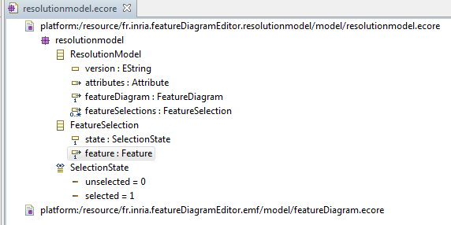

Build date: 14-October-2011
Abstract
This documentation presents the technical documentation about selection engine and product derivation for Feature Diagram Editor and the tests, which takes part of the ANR Project MOVIDA.
Table of Contents
Product Derivation is a way in the Software Product Line (SPL) to obtain a particular product model (a resolved model) from a global model (base model) on which variability (a way to model common and variable parts of a given architecture) is defined on a variability model (in our case a feature model).
Here we have two tools :
Selection Engine : It permits to an end-user to select desired features and stores all of these choices on a model called resolution model.
Product Derivation Engine : it use this resolved model to create the product model (resolved model).
This graphical tool regroup these two tools to integrate them on the Feature Diagram Editor.
It is an extension of the Feature Diagram Editor that permits to user to choose desired features and store it on a resolution model (Selection Engine) and then obtain resolved model from this resolution model (Product Derivation Engine). For more information about it please refer to the Product Derivation Documentation on the Eclipse help and on the sample wink video http://movida.gforge.inria.fr/uploads/Demos/SelectionAndDerivationDemo.htm.
Please also refer to end-user documentation .
To install Selection Engine and Product Derivation Engine you need to select Feature Diagram Editor category on the Movida Studio update site and all of its dependencies and select Product Derivation and Selection Engine. In this case, Selection Engine and Product Derivation Engine are dependant from Feature Diagram Editor.
Two metamodels are used on these Selection and Product Derivation engine :
The feature meta-model presented on the following figure :

For more information about it please refer to the Feature Diagram Editor Documentation.
the resolution model that store selected and unselected features as presented on the following figure :

Note that Attribute, FeatureDiagram and Feature meta-classes are meta-classes of featureDiagram metamodel. The enumeration SelectionState permits to know if a feature is selected or not.
Two ways can be used to derive the base model ( model on which elements were added on the derived feature model) :
Positive variability: we create a new empty model as resolved model and we add on it base model elements associated with selected features.
Negative variability: we create a copy of the base model and remove on it base model elements associated with unselected feature.
We use the negative variability for the current version. In a next version we will combine both positive and negative variability.
![[Important]](gfx/admonitions/important.gif) | Negative variability remove only domain model elements associated with unselected features |
|---|---|
Product derivation with negative variability remove only domain model elements associated with unselected features. All other elements stay in the resolved model. |
Derivation tests are available on the project fr.inria.featureDiagramEditor.fdext.ui.tests. To retrieve this project go to File-> New -> Example ->Product Derivation Sample -> Product Derivation Test. Then you can open the Design Perspective and click on the session files (.aird) and open it.